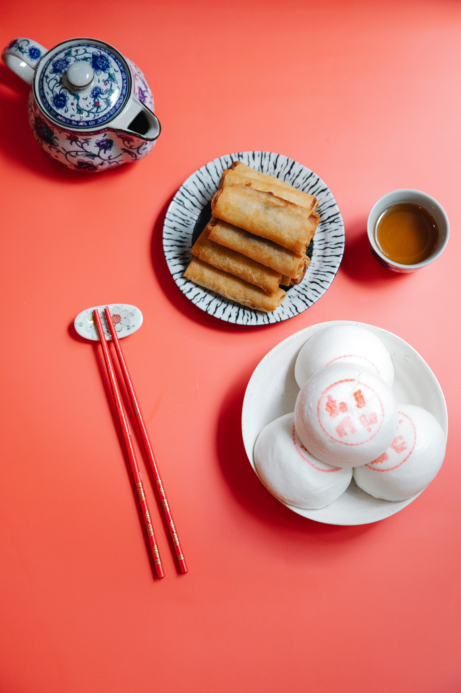

Loempia

Ingredients
- 4-6 large spring roll wrappers
- 1 egg, beaten
- 8 ounces cooked chicken breasts, sliced into thin strips
- 1 medium red onion, thinly chopped
- 1 garlic clove, minced
- 1 inch fresh gingerroot, minced
- 1 teaspoon sambal oelek
- 1 teaspoon trassi oedang
- 10 ounces white cabbage, thinly sliced
- 8 ounces bean sprouts
- 1 (6 ounce) can bamboo shoots
- 1 large carrot, shredded
- tablespoon ketjap manis
- 2 tablespoons peanut oil
Preparations
- Heat your wok and add the oil.
- Add onion, ginger, minced garlic and soften in wok.
- Add the Sambal and trassi and cook for a further 2 minutes.
- Add the vegetables, chicken and ketjap manis.
- Toss until vegetables are soft and "just" cooked.
Directions
- Spread out 2 spring roll sheets one on top of the other with the corners opposite from each other.
- Spoon in a generous amount of filling to the top center spring roll sheet.
- Fold in the top and bottom corners over the filling.
- Fold in the left and right corners making sure the filling is packed tight.
- Next fold in the second spring roll over the first in the opposite direction.
- Spread some beaten egg over the final folds to help them stick.
- Fry in hot oil for about 5 minutes, making sure both sides are browned equally.
- Serve with peanutsauce or just Ketjap manis and sambal.